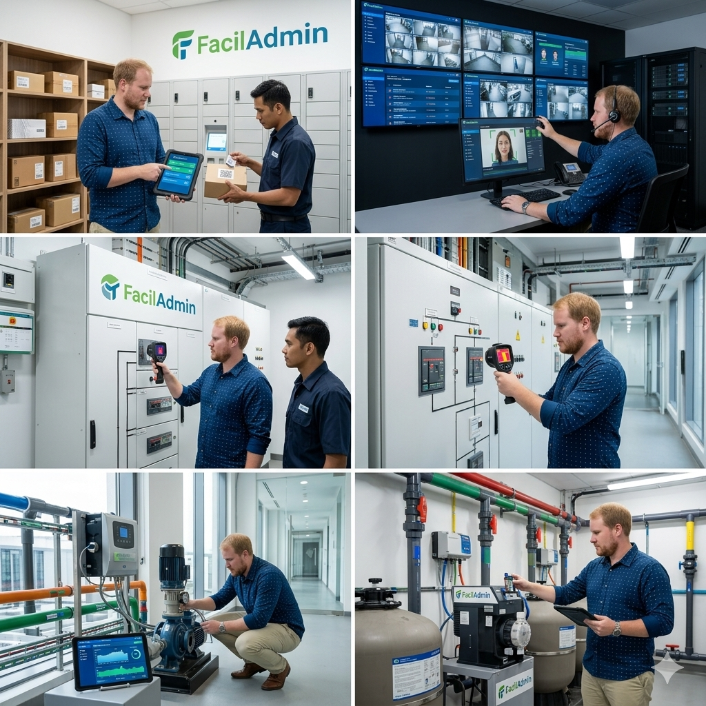

Gestão Financeira Preditiva
Previsões orçamentárias assertivas, auditoria contínua de entradas e saídas e estratégias inteligentes para zerar a inadimplência.
Substituímos o amadorismo por governança preditiva, imparcialidade total e tecnologia de ponta para valorizar o seu patrimônio e conectar seu condomínio à nossa rede inteligente de facilities.
Ecossistema Completo: Síndico profissional independente + plataforma de matching inteligente para fornecedores e facilities.
Conflitos de interesse, falta de técnica e manutenções corretivas caras drenam o orçamento do seu condomínio. Nós mudamos essa realidade.
Muito além da administração básica: unimos a figura do síndico especialista a uma plataforma proprietária de matching e eficiência para condomínios.
Previsões orçamentárias assertivas, auditoria contínua de entradas e saídas e estratégias inteligentes para zerar a inadimplência.
Vistorias técnicas periódicas, planos de manutenção rigorosos e acesso à nossa rede inteligente de fornecedores homologados.
Segurança jurídica integral na condução de assembleias, elaboração de atas, contratos e adequação total ao Código Civil.
Nossa operação é liderada por um especialista que cruza a **administração predial especializada** com **arquitetura de software e processos logísticos**.
Enquanto o mercado atua de forma reativa e baseada em planilhas antigas, o ecossistema FacilAdmin conecta demandas de condomínios a uma rede confiável de prestadores de serviços, garantindo velocidade, cotações justas e excelência operacional.

Esqueça a figura do síndico ausente ou amador. Entregamos uma gestão executiva de alta performance, fundamentada em Imparcialidade, Competência Técnica e Inovação Digital.
"A transparência na prestação de contas mudou radicalmente. Hoje o conselho e os moradores sabem exatamente o destino de cada centavo."
"A auditoria preventiva na área hidráulica evitou um colapso e reduziu nossos custos de manutenção corretiva em mais de 30%."
"A comunicação integrada e o ecossistema de facilidades tornaram a convivência no condomínio muito mais leve e organizada."
"O rigor jurídico na condução das assembleias e nos contratos nos deu uma tranquilidade institucional inédita."
"Ter um gestor com visão de ecossistema e tecnologia faz toda a diferença. Não troco o padrão FacilAdmin por nada."
Solicite um diagnóstico gratuito e descubra os benefícios de contar com uma gestão profissional e integrada.